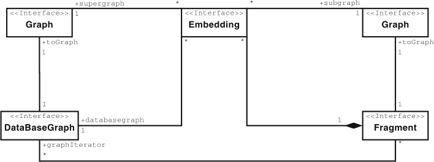

|
ParSeMiS (built 2008-09-04) Parallel and Sequencial Mining Suite |
||||||||
| PREV PACKAGE NEXT PACKAGE | FRAMES NO FRAMES | ||||||||
See:
Description
| Interface Summary | |
|---|---|
| DataBaseGraph<NodeType,EdgeType> | This interface encapsulates the required ability to be a DataBaseGraph. |
| Embedding<NodeType,EdgeType> | This interface declares the functionality of an embedding between a subgraph and its supergraph An embedding maps each node and each edge of a subgraph to exactly one edge of the supergraph |
| Fragment<NodeType,EdgeType> | This interface describe a special collection for embeddings. |
| Frequency | This interface describes the functionality of a frequency for graph mining |
| HPEmbedding<NodeType,EdgeType> | This interface declares the functionality of an embedding between a subgraph and its supergraph An embedding maps each node and each edge of a subgraph to exactly one edge of the supergraph |
| HPExtendedEmbedding<NodeType,EdgeType> | |
| HPFragment<NodeType,EdgeType> | This interface describe a special collection for high performance embeddings. |
Contains database and fragment handling.
The graphs that are searched for frequent substructures can be enhanced by a mining algorithm
to DataBaseGraphs with spezialized abilities. These are also
used to recover the original Graph objects.
The found frequent substructures are represented as Fragments.
Each instance of a fragment in the database is represented as an Embedding.
There are object-orientated and high performace versions of fragments and embeddings available
(for details see de.parsemis.graph).
UML-Diagram of the connection of DataBaseGraph,
Fragment, and Embedding:

|
ParSeMiS (built 2008-09-04) Parallel and Sequencial Mining Suite |
||||||||
| PREV PACKAGE NEXT PACKAGE | FRAMES NO FRAMES | ||||||||